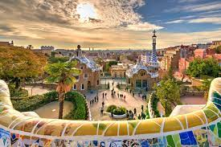

Barcelona, Espanha
Parque Guell
Barcelona é uma cidade vibrante e cheia de vida. Visite a Sagrada Família, projetada pelo renomado arquiteto Antoni Gaudí, e passeie pelo Parque Güell. Desfrute das praias e da cena culinária diversificada.
O site feito para VOCÊ conhecer os principais pontos turisticos do mundo.
Barcelona é uma cidade vibrante e cheia de vida. Visite a Sagrada Família, projetada pelo renomado arquiteto Antoni Gaudí, e passeie pelo Parque Güell. Desfrute das praias e da cena culinária diversificada.